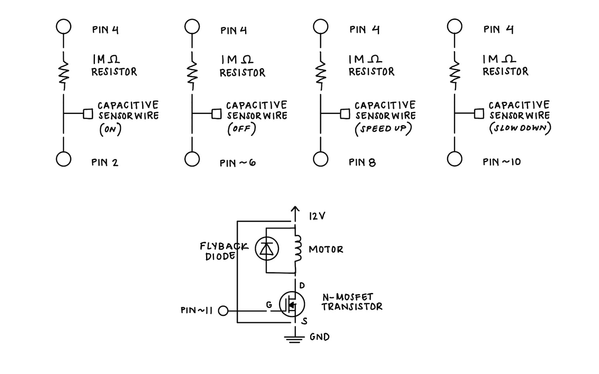

My Schematic
 Image of my schematic with labeled components, including pins (send and receive), resistors, capacitive sensor wires, diode, transistor, motor, external power source, and ground.Resistance Values
I used 1M ohm resistors for the capacitive touch sensors because they provide low sensitivity, but fast response readings. It works well for my circuit's operation since I want the motor to adapt quickly when a capacitive touch is detected, without being too sensitive to false touches.My Circuit
 Image of my physical circuit, "High(er) voltage and transistors!", with all components connected.
Image of my physical circuit, "High(er) voltage and transistors!", with all components connected.
My Firmware
#include
/*
* CapitiveSense Library Demo Sketch
* Paul Badger 2008
* Uses a high value resistor e.g. 10M between send pin and receive pin
* Resistor effects sensitivity, experiment with values, 50K - 50M. Larger resistor values yield larger sensor values.
* Receive pin is the sensor pin - try different amounts of foil/metal on this pin
*/
CapacitiveSensor cs_4_2_on = CapacitiveSensor(4,2); // capcitive sensor object for ON pad (send pin 4, receive pin 2)
CapacitiveSensor cs_4_6_off = CapacitiveSensor(4,6); // capcitive sensor object for OFF pad (send pin 4, receive pin 6)
CapacitiveSensor cs_4_8_up = CapacitiveSensor(4,8); // capcitive sensor object for SPEED UP pad (send pin 4, receive pin 8)
CapacitiveSensor cs_4_10_down = CapacitiveSensor(4,10); // capcitive sensor object for SLOW DOWN pad (send pin 4, receive pin 10)
int motorPin = 11; // arduino pin for the motor, connected to MOSFET transistor
int speed = 0; // store current motor speed as PWM value (0-255)
int lastSpeed = 0; // store the last nonzero speed for when motor is turned back on
const int speedStep = 25; // set how much the speed changes with each touch
int touchThreshold = 800; // set threshold value that determines a valid touch
void setup() {
// Disable autocalibrate on each capacitive channel
cs_4_2_on.set_CS_AutocaL_Millis(0xFFFFFFFF);
cs_4_6_off.set_CS_AutocaL_Millis(0xFFFFFFFF);
cs_4_8_up.set_CS_AutocaL_Millis(0xFFFFFFFF);
cs_4_10_down.set_CS_AutocaL_Millis(0xFFFFFFFF);
Serial.begin(9600); // Initialize serial communication
pinMode(motorPin, OUTPUT); // Intialize digital pin for the motor as an output (current state: LOW -- until analogWrite() updates it)
analogWrite(motorPin, 0); // set motor speed to 0 at the start so the motor stays off
Serial.println("Capacitive Motor Controller: ON, OFF, SPEED UP, SLOW DOWN"); // Print startup message to Serial Monitor
}
void loop() {
// record current time to measure how long sensor readings take
long start = millis();
// read capacitive sensor values from ON, OFF, SPEED UP, and SLOW DOWN
long onValue = cs_4_2_on.capacitiveSensor(30);
long offValue = cs_4_6_off.capacitiveSensor(30);
long upValue = cs_4_8_up.capacitiveSensor(30);
long downValue = cs_4_10_down.capacitiveSensor(30);
Serial.print(millis() - start); // check on performance in milliseconds
Serial.print("\t"); // tab character for debug windown spacing
Serial.print(onValue); // print sensor output 1
Serial.print("\t");
Serial.print(offValue); // print sensor output 2
Serial.print("\t");
Serial.println(upValue); // print sensor output 3
Serial.print("\t");
Serial.println(downValue); // print sensor output 4
delay(10); // arbitrary delay to limit data to serial port
// If the OFF pad reading exceeds the threshold, stop the motor
if (offValue > touchThreshold) {
speed = 0; // set motor speed to zero
analogWrite(motorPin, speed); // write 0 to the motor pin
Serial.println("OFF: speed = 0"); // print confirmation to serial monitor
return; // exit loop iteration
}
// If ON pad is touched, restore previous speed
if (onValue > touchThreshold) {
// if lastSpeed is 0, assign a default speed value
if (lastSpeed == 0) {
lastSpeed = 160;
}
speed = lastSpeed; // set current speed to the last stored nonzero speed
analogWrite(motorPin, speed); // write the value to the motor pin to spin motor
// print new speed to serial monitor
Serial.print("ON: speed = ");
Serial.println(speed);
return; // exit loop iteration
}
// If the SPEED UP pad is touched, increase motor speed
if (upValue > touchThreshold) {
// add the step size to speed, but keep it within 0-255
speed = constrain(speed + speedStep, 0, 255);
// if motor is running, update the stored last speed
if (speed > 0) {
lastSpeed = speed;
}
analogWrite(motorPin, speed); // apply new speed to the motor
// print speed update to serial monitor
Serial.print("SPEED UP: speed = ");
Serial.println(speed);
return; // exit loop iteration
}
// If the SLOW DOWN pad is touched, decrease motor speed
if (downValue > touchThreshold) {
// subtract the step size from the speed, but keep it within 0-255
speed = constrain(speed - speedStep, 0, 255);
// if motor is still on, update last speed
if (speed > 0) {
lastSpeed = speed;
}
analogWrite(motorPin, speed); // apply reduced speed to the motor
// print update to serial monitor
Serial.print("SLOW DOWN: speed = ");
Serial.println(speed);
return; // exit loop iteration
}
}
My Circuit's Operation
Video of my circuit in operation, with capacitive touch sensors controlling the motor and its speed.Additional Questions
1: This is the datasheet for the n-mosfet transistor: https://www.diodes.com/assets/Datasheets/DMT6009LCT.pdfLinks to an external site.
What is the absolute maximum amount of current between pins 2 and 3?
For the n-mosfet transistor, the absolute maximum amount of current between pin 2 (drain) and pin 3 (source) is 37.2 A continuously or 80 A pulsed.
2: Draw a schematic for a circuit with using at least your arduino, a DC motor, a flyback diode, and capacitors between power and ground.
Find parts with datasheets you could use for each of these schematic components.
Answer
3: Here is the datasheet for the L293D chip: https://www.ti.com/product/L293DLinks to an external site.
Draw a schematic using at least your arduino, this chip, and two motors.
Write (pseudo) code that shows how you would move the motors both forward, both back,
then one forward one back, and one back then forward.
Answer
4: Did you use AI tools in completing this assignment?
If yes, please provide details on how/when, as well as a brief reflection.
If no, you can either leave this question blank, or provide other information if you'd like.
Answer